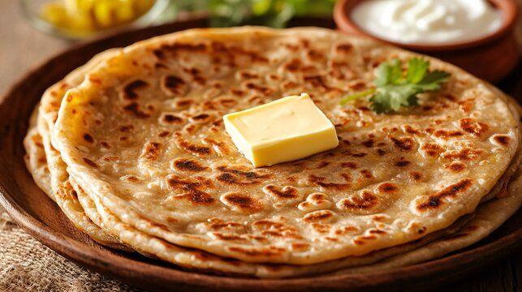

Home
Aloo Paratha

Aloo Paratha is a popular Indian flatbread stuffed with
spiced mashed potatoes. It is cooked on a hot tawa with
ghee or oil and makes a satisfying breakfast or lunch.
Recipe Information
- Preparation Time: 20 minutes
- Cooking Time: 20 minutes
- Total Time: 40 minutes
- Servings: 4 parathas
- Difficulty: Medium
Ingredients
- 2 cups whole wheat flour
- 3 medium potatoes
- 1 green chilli, finely chopped
- 2 tablespoons chopped coriander leaves
- 1/2 teaspoon cumin powder
- 1/2 teaspoon red chilli powder
- 1/2 teaspoon garam masala
- Salt to taste
- Water as required
- Ghee or oil for cooking
Instructions
- Prepare the dough: Mix wheat flour with water and knead into a soft dough. Rest for 10 minutes.
- Boil the potatoes: Boil potatoes until soft, peel them, and mash thoroughly.
- Prepare the filling: Mix mashed potatoes with green chilli, coriander, spices, and salt.
- Shape the paratha: Divide the dough into balls and roll each into a small circle.
- Add filling: Place potato filling in the centre, seal the edges, and gently roll it out.
- Cook: Place the paratha on a hot tawa and cook on both sides.
- Add ghee: Apply ghee or oil and cook until golden brown spots appear.
- Serve: Serve hot with curd, pickle, or butter.
Serving Suggestions
Serve Aloo Paratha with fresh curd, pickle, or mint chutney.
Tips for Perfect Aloo Paratha
- Mash the potatoes without leaving lumps.
- Avoid adding too much water to the filling.
- Roll gently to prevent the filling from coming out.
- Cook on medium heat for an evenly cooked paratha.
Enjoy Your Homemade Aloo Paratha!
Golden, crispy, and flavourful Aloo Parathas are ready to serve.